<title>Field Skin Check</title>
<style>
/* Layout: summary table, then one row per surface and width with the three skins side by side. */
:root {
  --bg: #f4f0e6; --fg: #14140f; --muted: #5b5a52; --line: #d9d3c4; --accent: #0b7a3b;
  --display: "Fraunces", Georgia, serif; --mono: "IBM Plex Mono", ui-monospace, monospace;
}
@media (prefers-color-scheme: dark) { :root:not([data-theme="light"]) { --bg: #16170f; --fg: #eeeadf; --muted: #a8a596; --line: #34352b; --accent: #4cc27a; color-scheme: dark } }
:root[data-theme="dark"] { --bg: #16170f; --fg: #eeeadf; --muted: #a8a596; --line: #34352b; --accent: #4cc27a; color-scheme: dark }
body { background: var(--bg); color: var(--fg); font: 16px/1.5 var(--mono); margin: 0; }
main { max-width: 1400px; margin: 0 auto; padding: 32px 16px 64px; display: grid; gap: 40px; }
h1 { font: 600 2rem/1.1 var(--display); margin: 0; text-wrap: balance; }
p, li { color: var(--muted); font-size: 0.9rem; max-width: 75ch; }
p { margin: 8px 0 0; }
ul { margin: 8px 0 0; padding-left: 20px; }
.scroll { overflow-x: auto; }
table { border-collapse: collapse; font-size: 0.85rem; margin-top: 12px; font-variant-numeric: tabular-nums; }
th, td { text-align: left; padding: 4px 16px 4px 0; border-bottom: 1px solid var(--line); white-space: nowrap; }
th { text-transform: uppercase; letter-spacing: 0.06em; font-weight: 500; color: var(--muted); }
tr.pick td { color: var(--accent); font-weight: 500; }
section h2 { font: 500 0.8rem var(--mono); text-transform: uppercase; letter-spacing: 0.08em; margin: 0 0 12px; color: var(--accent); }
.trio { display: grid; grid-template-columns: repeat(3, minmax(0, 1fr)); gap: 16px; }
.trio.narrow { grid-template-columns: repeat(3, minmax(0, 300px)); }
figure { margin: 0; min-width: 0; }
figcaption { font-size: 0.8rem; color: var(--muted); margin-bottom: 6px; }
img { display: block; width: 100%; height: auto; border: 1px solid var(--line); }
@media (max-width: 800px) { .trio, .trio.narrow { grid-template-columns: 1fr; } }
</style>
<link rel="stylesheet" href="https://fonts.googleapis.com/css2?family=Fraunces:wght@600&family=IBM+Plex+Mono:wght@400;500&display=swap">
<main>
  <header>
    <h1>One resting skin for a field that takes a typed value?</h1>
    <p>Ticket #3307. Four production fields with their resting skin replaced by injected CSS. A is today. Nothing is built. Focus is not shown; it belongs to #2530.</p>
    <div class="scroll"><table>
      <tr><th>Option</th><th>Background</th><th>Border</th><th>Shadow</th><th>Typeface</th></tr>
      <tr><td>A · today</td><td colspan="4">four different skins (see below)</td></tr>
      <tr class="pick"><td>B · the primitives win (suggested)</td><td>white</td><td>2px ink/30</td><td>4px grey #6b6b6b</td><td>Freight Sans 16px</td></tr>
      <tr><td>C · the other three win</td><td>cream</td><td>2px ink</td><td>4px ink</td><td>unchanged</td></tr>
    </table></div>
    <p><strong>The ticket's premise was half wrong.</strong> Only one of the four fields sits on a cream page:</p>
    <ul>
      <li><code>/zoeken</code> and <code>/hulp</code>: the field sits on the dark green band. An ink shadow on dark green almost vanishes. DESIGN.md already gives that job to the grey shadow ("anything on an ink or dark-green surface").</li>
      <li><code>/club/word-lid</code>: the fields sit on a white form card. Cream fields (C) turn the card into two whites and a cream.</li>
      <li><code>/kalender</code>: the only field on cream. It sits in a row of mono team chips. B makes it a sans field 36px tall beside 31px chips.</li>
    </ul>
    <p>B matches the written rule (DESIGN.md "Inputs / Fields": "white surface, the one white in the system") and needs no change to the primitives or to DESIGN.md. C rewrites the rule for one cream surface.</p>
  </header>

  <section><h2>/zoeken · 1440 · dark green band</h2><div class="trio">
    <figure><figcaption>A · today: cream, ink border, 5px ink shadow, 18px</figcaption></figure>
    <figure><figcaption>B · primitives</figcaption></figure>
    <figure><figcaption>C · shared ink skin</figcaption></figure>
  </div></section>

  <section><h2>/hulp · 1440 · dark green band</h2><div class="trio">
    <figure><figcaption>A · today: cream, ink border, 4px ink shadow</figcaption>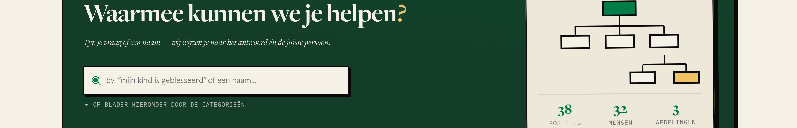</figure>
    <figure><figcaption>B · primitives</figcaption>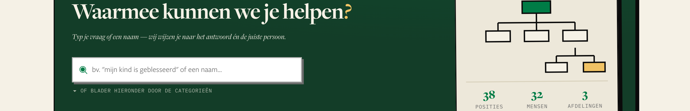</figure>
    <figure><figcaption>C · shared ink skin</figcaption></figure>
  </div></section>

  <section><h2>/club/word-lid · 1440 · white form card</h2><div class="trio">
    <figure><figcaption>A · today = B</figcaption></figure>
    <figure><figcaption>B · primitives</figcaption></figure>
    <figure><figcaption>C · shared ink skin</figcaption></figure>
  </div></section>

  <section><h2>/kalender · 1440 · subscribe panel, cream</h2><div class="trio">
    <figure><figcaption>A · today: cream, ink border, no shadow, mono 12px</figcaption>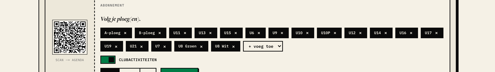</figure>
    <figure><figcaption>B · primitives</figcaption>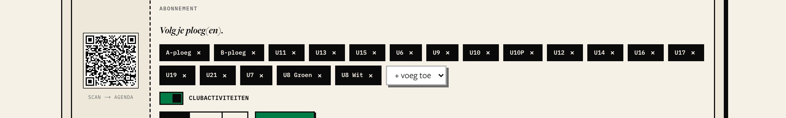</figure>
    <figure><figcaption>C · shared ink skin</figcaption>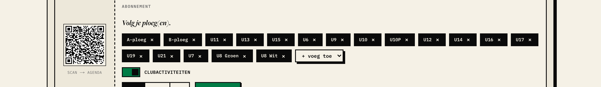</figure>
  </div></section>

  <section><h2>390 · all four</h2>
    <div class="trio narrow">
      <figure><figcaption>/zoeken A</figcaption></figure>
      <figure><figcaption>/zoeken B</figcaption></figure>
      <figure><figcaption>/zoeken C</figcaption></figure>
      <figure><figcaption>/hulp A</figcaption></figure>
      <figure><figcaption>/hulp B</figcaption>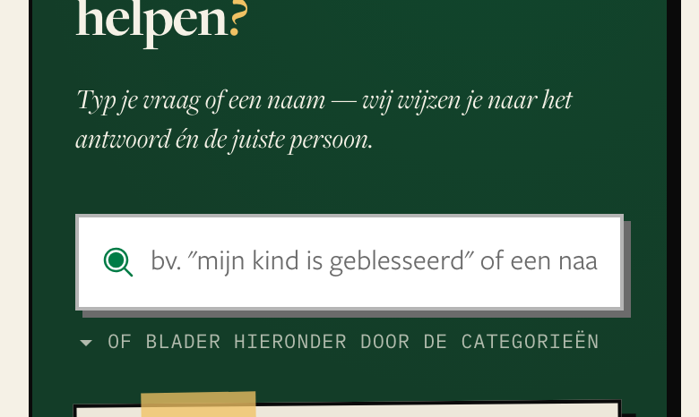</figure>
      <figure><figcaption>/hulp C</figcaption>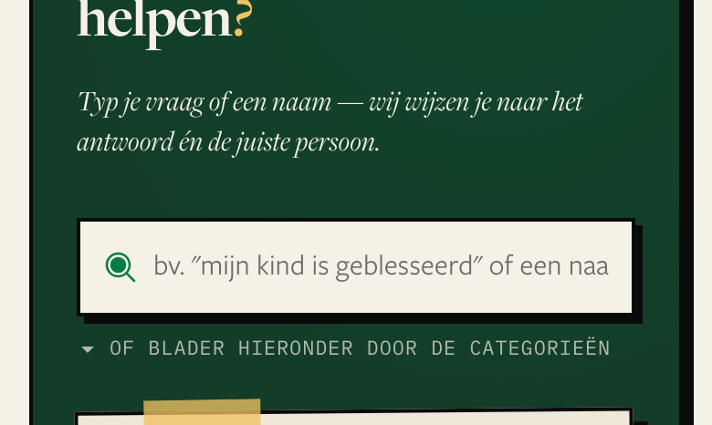</figure>
      <figure><figcaption>/club/word-lid A</figcaption>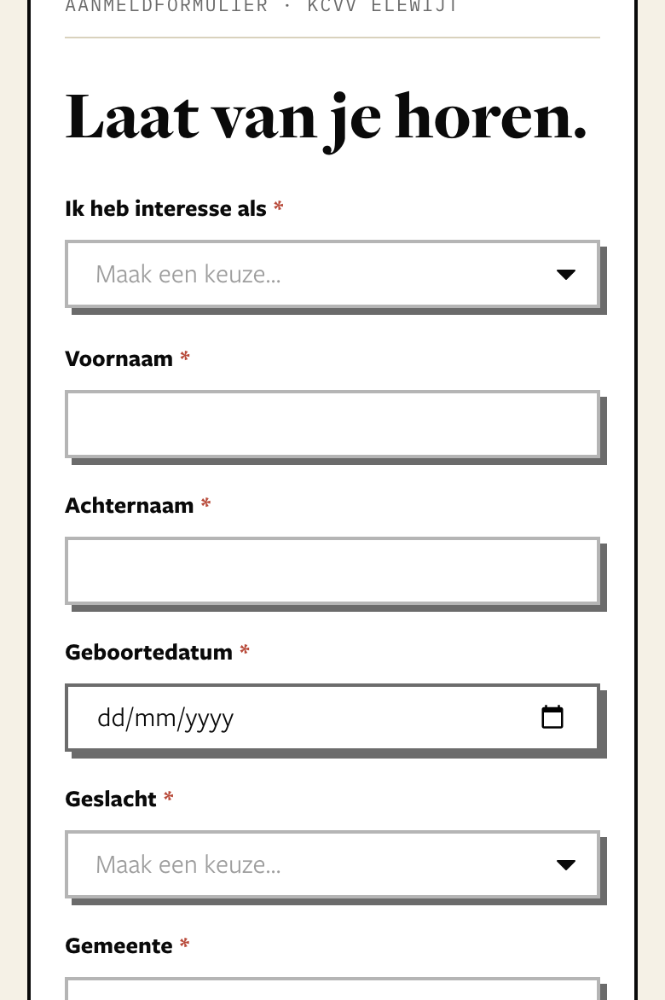</figure>
      <figure><figcaption>/club/word-lid B</figcaption>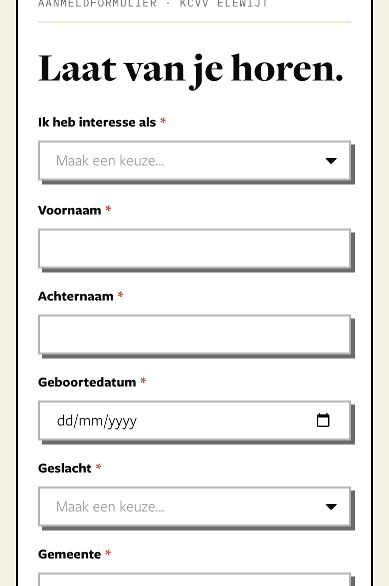</figure>
      <figure><figcaption>/club/word-lid C</figcaption>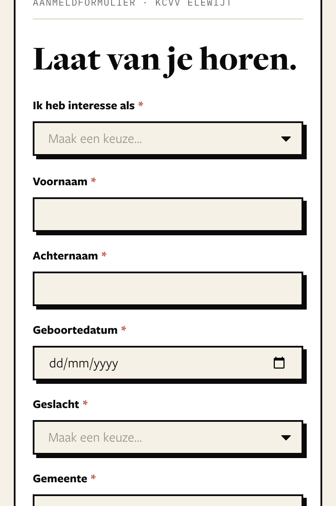</figure>
      <figure><figcaption>/kalender A</figcaption>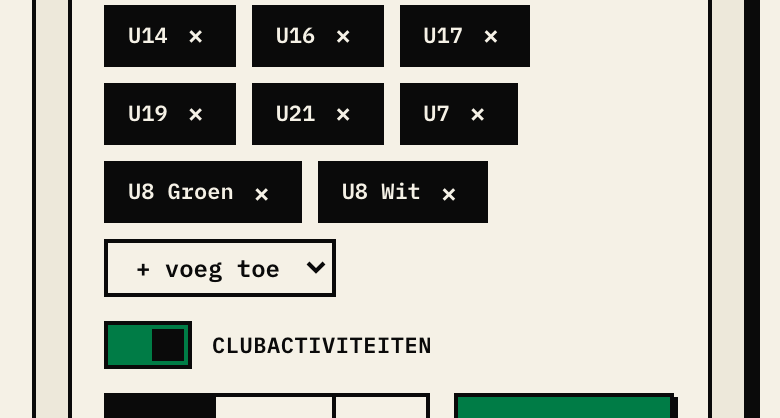</figure>
      <figure><figcaption>/kalender B</figcaption>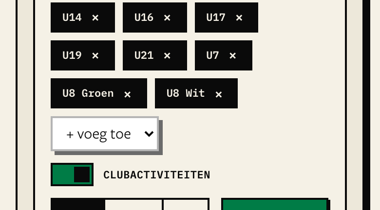</figure>
      <figure><figcaption>/kalender C</figcaption>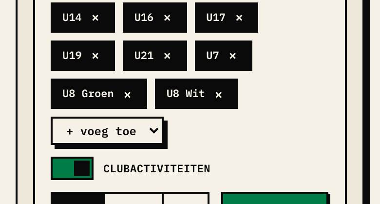</figure>
    </div>
  </section>
</main>
